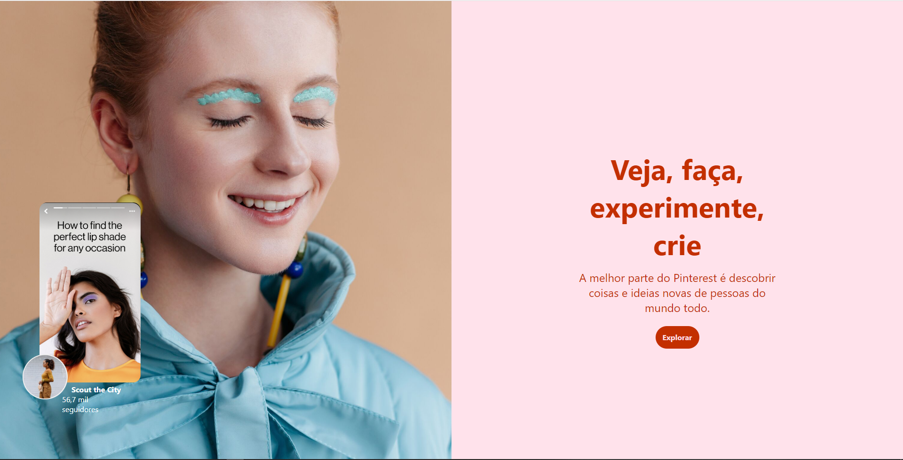
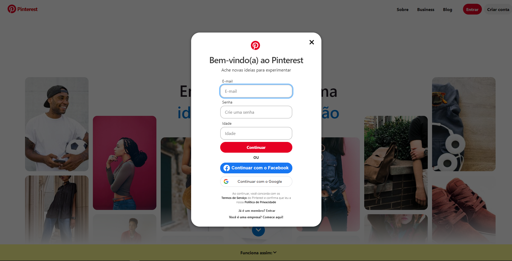
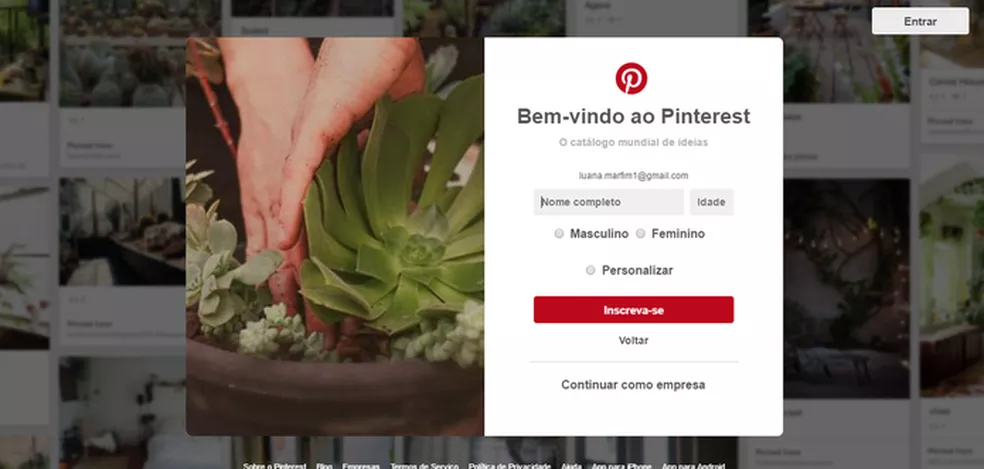
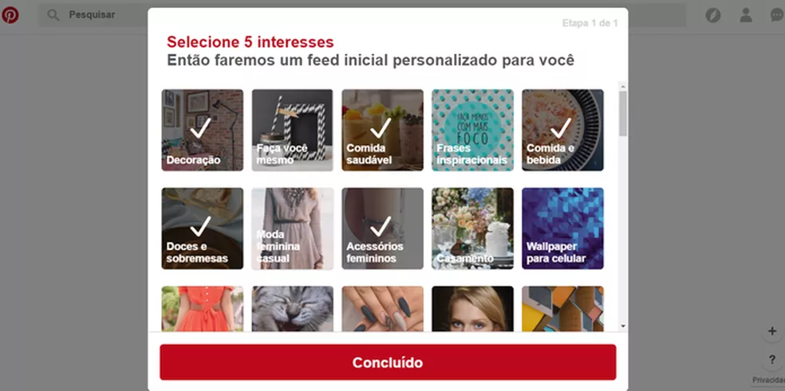

Perfil de usuario no Pinterest

Passo 1
O primeiro passo para usar o Pinrterest é criar um perfil de usuario que pode ser vinculado a sua conta do Fcebook, Google ou criado a partir do seu email.
Na página inicial, no canto superior esquerdo, clique em criar conta.
Passo 2
Escolha entre criar uma conta do zero, inserindo seu email e senha e clique em continuar. Ou então vincule seu perfil a sua conta do Facebook ou do Google
Passo 3
Em seguida digite seu nome completo, sexo e idade e clique em Increver-se.
Passo 4
A próxima tela, você terá que escolher cinco assuntos entre as suas preferências. Após escolher, clique em "Concluído";
